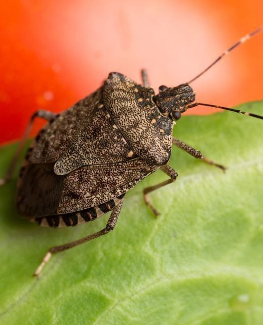
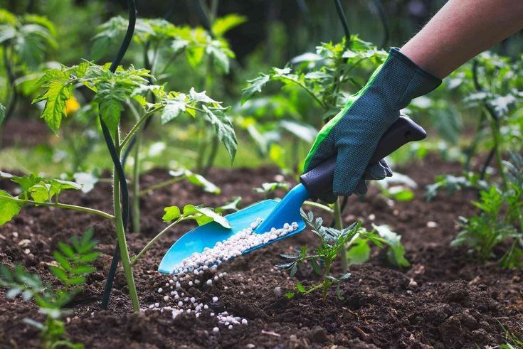
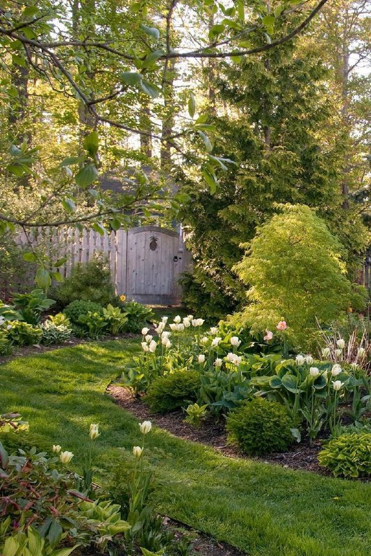
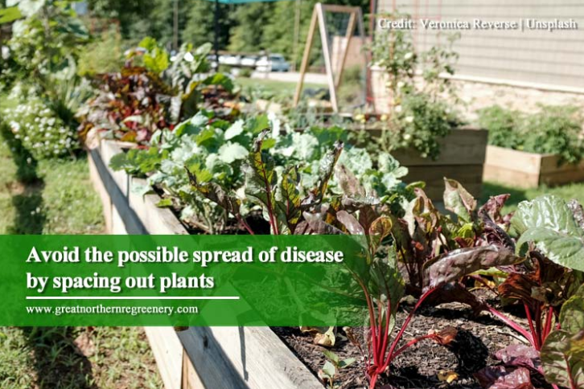

How to take care of your beautiful garden
Learn how to plant and care for vegetables, flowers, and more—even if you're a beginning gardener
Prevention is the best defense. This applies in keeping your garden healthy to protect your plants from destructive diseases. Basic garden maintenance is imperative in ensuring that your plants, trees, soil, and flowers remain healthy all year round.
Follow these simple yet impactful ways to keep your garden in top shape and for it to add value to your property.

Keep an eye out for bugs
Insects can cause more damage to plants than what is visible to the eye. As a bug eats off a plant, it can create an opening that becomes an entryway for viruses and bacteria. Some insects are carriers of viruses and transmit diseases from one plant to another. One of the most common carriers of viruses is aphids. Thrips (tiny winged insects that suck plant sap) are also known for spreading the plant life-threatening virus called impatiens necrotic spot virus. When left unaddressed, viruses can stress out plants until they wilt and die. Keep your trees, plants, and shrubs free from pest infestation. By employing strict prevention measures from the get-go, you can save dollars on costly pest removal solutions later on.
Plants That Keep Pests Away click for more
Appropriate Fertilizer Use
The goal of applying fertilizer is to supply just enough to meet the needs of the plant. Too much fertilizer can run off into nearby waters, leach into groundwater or encourage weeds. A plant’s health should be the guide. If plants suffer from a lack of vigor, retarded growth, sparse foliage or leaf discoloration, they may be nutrient deficient, although improper drainage or inadequate aeration are more likely the cause
How to get started click for more

Plant on the right site
Where you grow your plant is as important as your choice of the plant variety. For instance, azaleas grow well in shaded areas. Plant it in a sunny zone and it will become susceptible to insects and diseases. Plants also have an immune system that kicks into high gear when they are put under unfavourable conditions. When stressed out, plants are not able to fight off or recover from infections.

Maintain distance between plants
Avoid crowding plants and ensure that established plants have enough space to spread. It’s important to improve airflow in your garden to prevent the buildup of humidity which causes diseases like rust and mildew. In addition, plants that are too close to each other may not grow well. This is due to competition for water, light, and nutrients. Diseases can also spread easily when plants are placed closely together. Besides maintaining distance, cut off old or damaged stalks to reduce the risk of disease.
Plant Spacing Calculator click for more
Clean up during the fall.
Garden maintenance is a must all throughout the year, but it is particularly helpful to clean the garden in the fall. Doing so wards off chances of diseases and it is a way to manage existing diseases plaguing a garden.
Dead leaves can become a haven for diseases. Black spots, leaf spots, and leaf streaks are just a few of the diseases that can be minimized if dead leaves are removed and disposed of during the fall.